Dev-log #11: Even More New Overworld Elements
May 2, 2020.
Hello everybody! Welcome back to another dev-log. This is the first website post of 2020… almost 5 months in….hm….
...
Anyways! Over the past few months I have been working primarily on the overworld and making as fleshed out as possible. Much of what I am going to show you in the dev-log is planned to be in the Project Phases demo. It feels awesome starting to work on stuff that you will actually be able to play. We got a lot of stuff to go through so let's get started.
Welcome to the town of Arlette
Let me first introduce to you the town of Arlette. This is the starting town for the demo and Daryl’s (the main character) hometown. There are 4 separate areas in Arlette, the main town, North Arlette, South Arlette and East Arlette. Arlette is also the home of the North Cave, which you can get to by traveling through North Arlette. Let me show you some of it…
 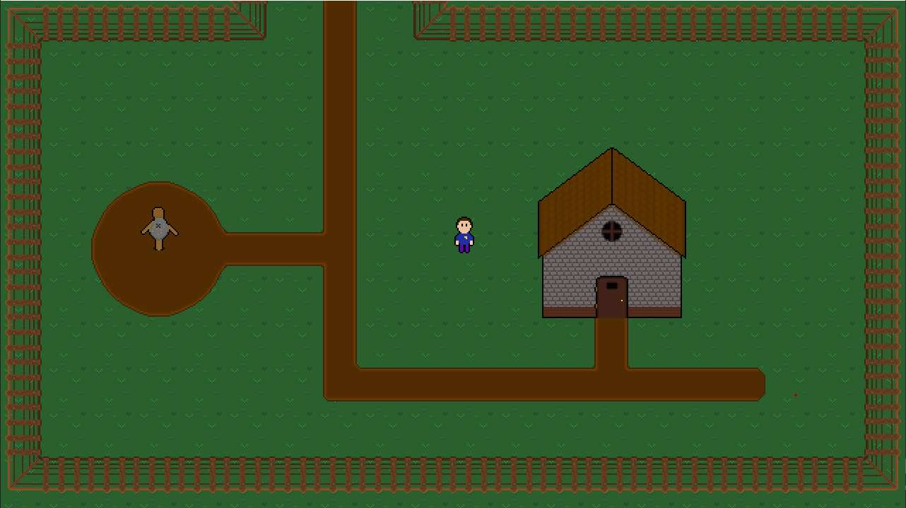
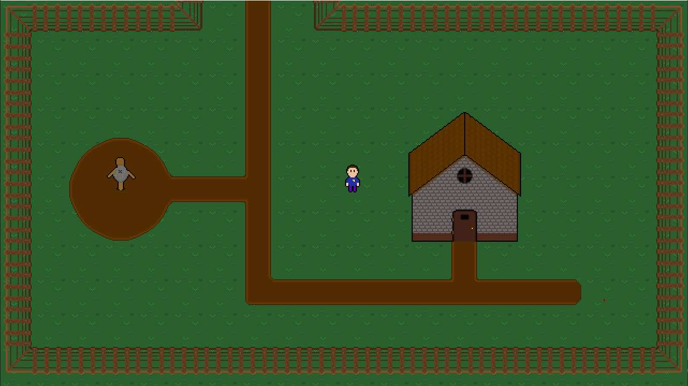
New Overworld Tiles
These new areas are made up from a new overworld tileset that is higher resolution and (in my opinion) higher visual quality. Some of the already existing overworld elements have also been updated to match this new visual style like Daryl, who has gotten new sprites and walking animations. Here is a comparison, old is on the left and new is on the right.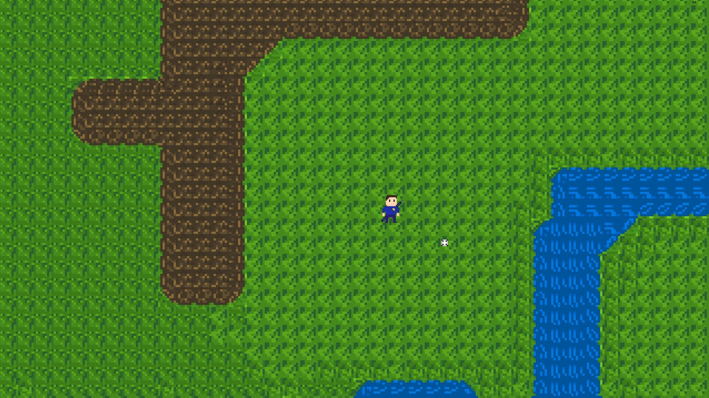 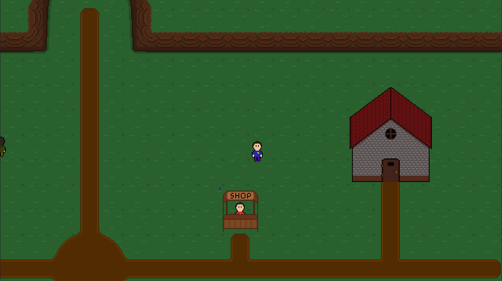
NPCs
All in all, the town is pretty small but there are quite a few villagers roaming around. These are some new NPCs. In the past, NPCs were limited to staying in one place and being talked to, but now they can move around freely. They will even face you when you talk to them.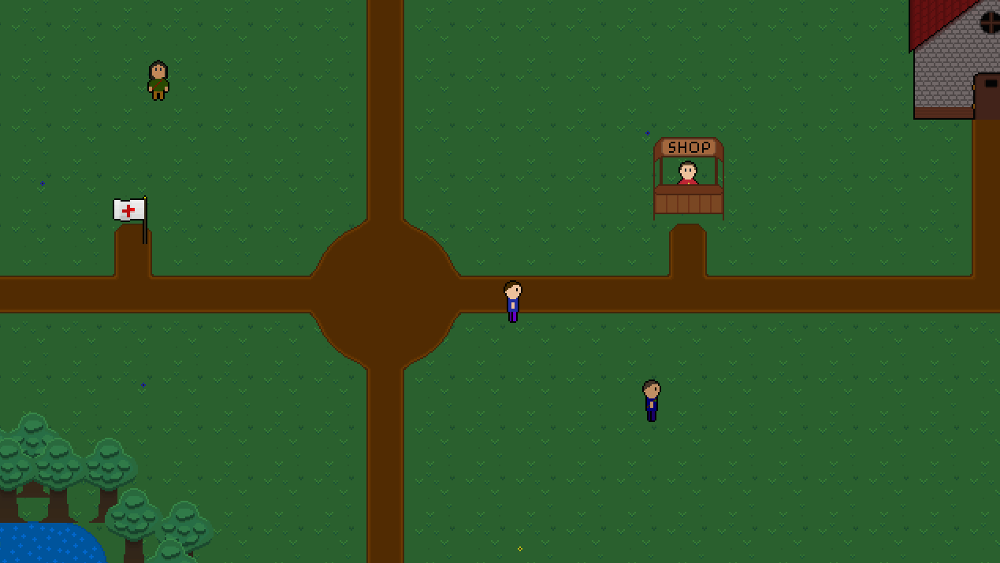
Houses
There are also several houses in Arlette, all of which you can go inside. There is of course a new house tileset for the interior. You may find NPCs inside a house, like Alex. It is his house after all. It is odd though, there seems to be more villagers than houses in Arlette. I wonder where everyone lives…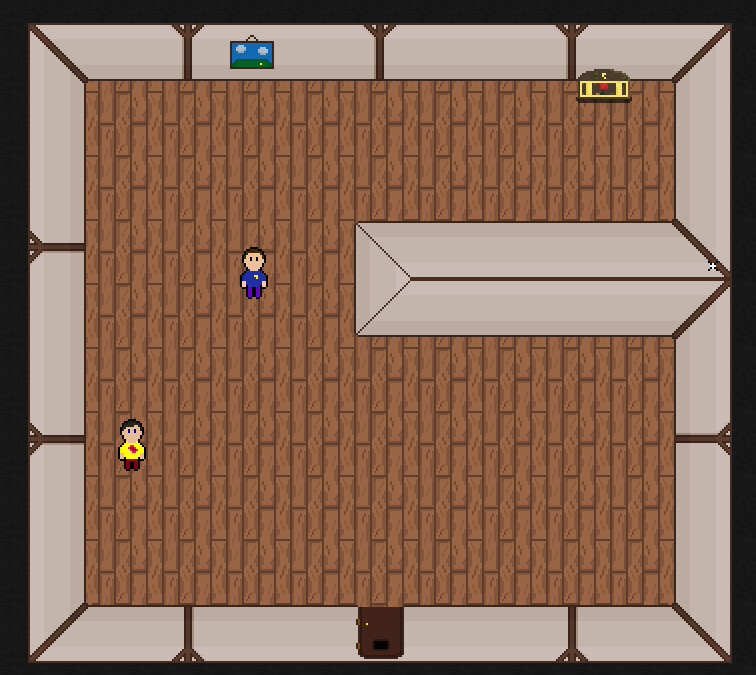
However, some house’s aren’t open to the public. You can’t just go breaking into people’s houses without their permission! Because of this, some houses are locked and you can’t go inside without a key. Once you obtain the key, you can go inside freely.
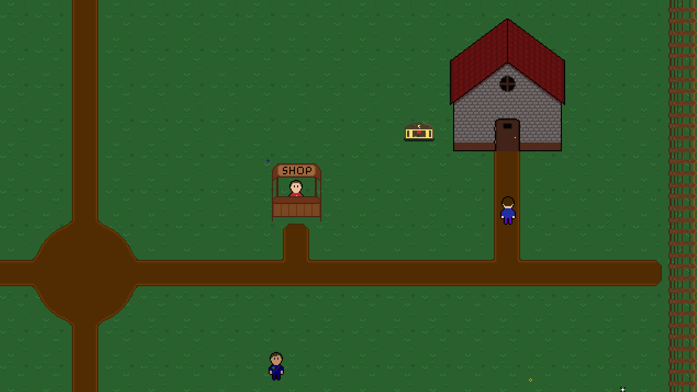
Note: The chest holding Alex’s House Key will not be right next to his house in the final demo.
Other Elements
There are some other new elements. First is the new shop stand, where Chris the shopkeeper will stand waiting for you to buy his wares. Of course, you can only talk to him from the front. You are not allowed to go to the back, you could steal something! Quick thanks to Tektow for helping me make this.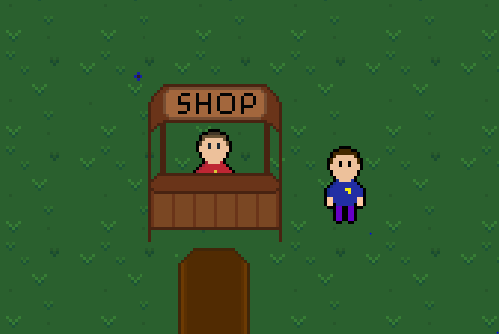
After lots of shopping, you may feel inclined to rest in some shade. Luckily, there are trees around the village. These trees sway from side to side, occasionally dropping leaves, quite relaxing.
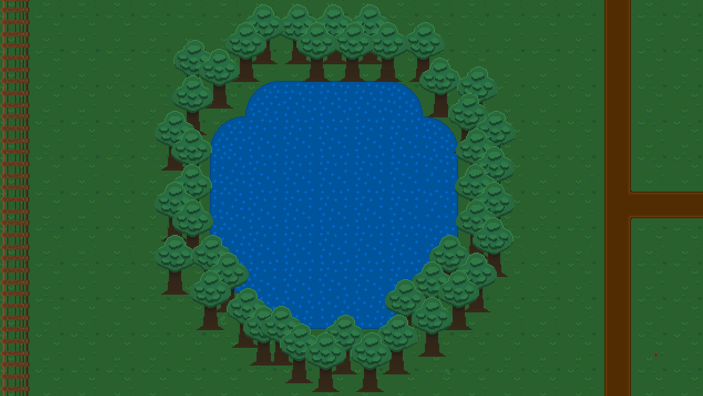
While you’re sitting under the tree, you spot a villager running towards the edge of the map. Oh no! What will happen if he manages to leave Arlette! Thankfully, the villagers of Arlette have already thought this through and have placed fences all over the town to ensure no one leaves accidently. Don’t worry though, I hear you can leave Arlette through the east passage, but you wouldn’t have to do that unless something bad happened....
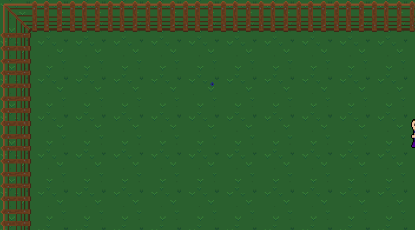
After realizing that Arlette resembles a prison, you decide to go home. You go from the back and somehow manage to end up behind the house. In normal circumstances, you wouldn’t be able to see Daryl, however, some objects will fade out when you go behind them to allow you to know where you are.
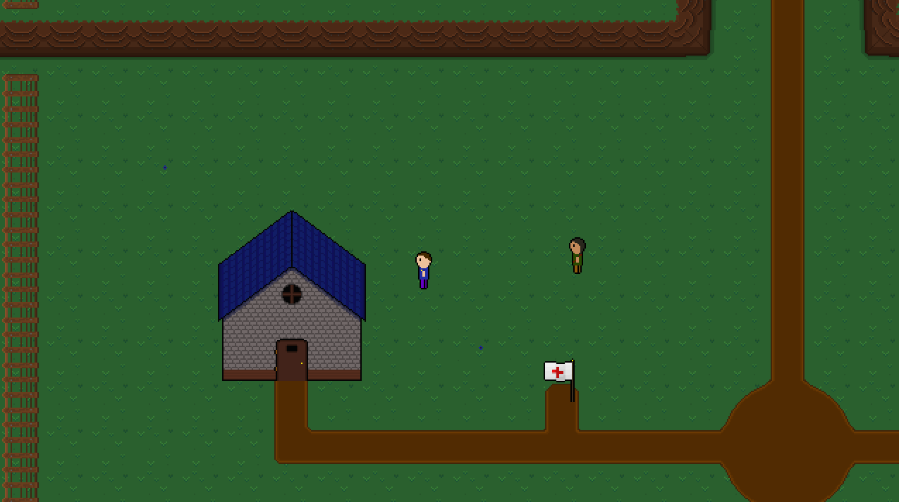
Overworld Gameplay and Backend Changes
In addition to all of the new town assets, there have been a few changes to the overworld gameplay and backend system that help organize everything. Let me go over a few of them.Updated Dash
There are a few features I have barely touched since Project Phases inception, one of which being the dash mechanic. When you press Shift, you briefly get a huge burst of speed. Once it is over, you will go back to a normal walking pace. You have to wait a few seconds for it to recharge before you can use it again, pretty simple. I implemented it because I wanted to have a sprint function, but at the time I was too inexperienced with programming and couldn’t figure out how to make spriting work, so I made a dash instead. I could make the sprint function I originally envisioned now, but I am so used to the dash at this point that I didn’t want to change it.However, the dash felt awful. There was no flow to it, it would just increase your speed suddenly and stop you instantly. It had the same feeling as running on the moving walkways you find at an airport and the awful feeling that you get once you run out of speed. However, it is now much better with a more subtle speed increase and a gradual slow down that makes it feel more like a dash rather than a rocket hitting a wall.
Transitions
We have transitions now! No more are the day of instantly (and quite jarringly) being teleported to a new area. There are 2 transitions, a general overworld transition and a battle transition.The overworld transition is a simple fade in/out to black. Nothing crazy but it is definitely an improvement. This transition occurs whenever you enter a house or move into a new area.
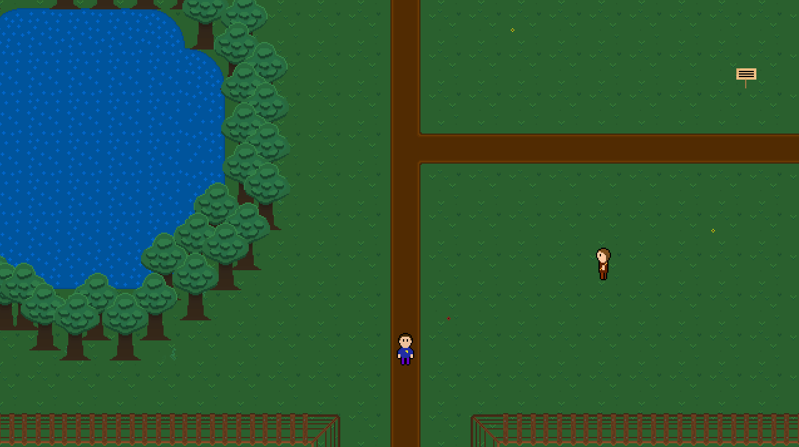
The battle transition occurs whenever you enter a battle. It consists of black bars swiping over the screen revealing a battle underneath. This transition also has a random element to it. Everytime the transition is played, a random number of bars are chosen as well as the speed at which those bars move across the screen. It’s a small random factor, but interesting nonetheless. The only thing this transition needs is sound effects and I think it will be ready for battle.
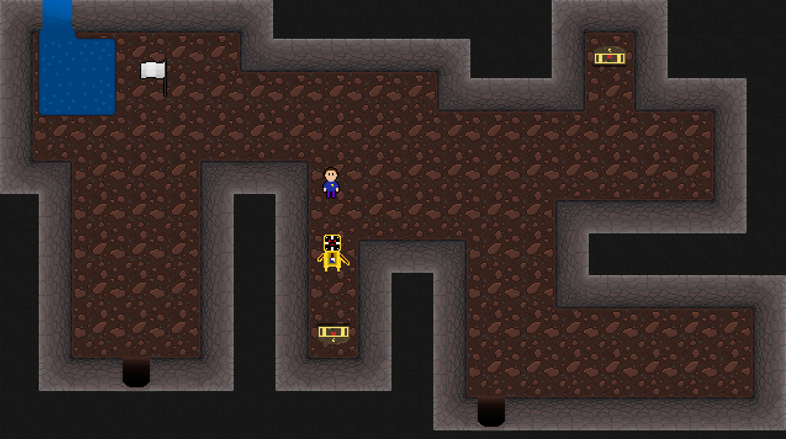
Updated Chests (again)
In the last dev-log, I mentioned how I updated how I organize the signs. Before I changed it, every sign was a unique object like sign1, sign2, and sign3. However, the new system allows me to make only one sign object that I can change the text of whenever I place a new one. This helps cut down on the number objects in the game and makes it much easier to update the sign code if need be since I would only have to make that change once rather than dozens of times.I now have updated the chests to follow a similar system. I now tell a singular chest what items to hold when I first create it. I also added official support for upside-down chests, if you want to open it from the bottom rather than the top. Lastly, if a chest holds multiple items and you can’t carry one of them due to a full inventory, you will get a message telling you that you are carrying too many items and the chest will close.
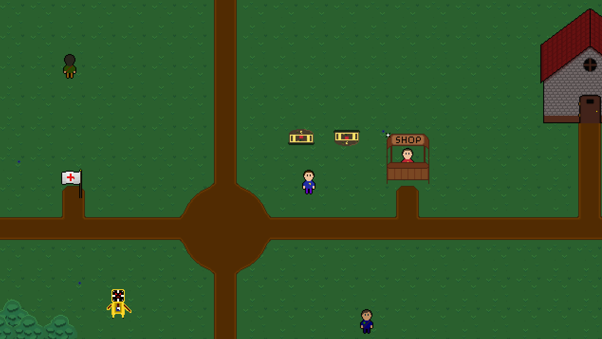
Updated Camera
You may have noticed earlier the first gif of this dev-log having a much more dynamic camera than I normally have. I have updated the camera considerably to be able to follow any object and even give me full control to allow me to make panning images like the one above. I used a modified version of FriendlyCosmonaut’s system. She is awesome so go check her out.Performance Optimizations
Another thing I have been working on is performance optimization. As I have been adding more and more elements to the game, I have to keep an eye on how many objects are active at any given time to keep performance up. I’ve been doing a good job of this with many of the new features, but the older ones needed a lot of work.For example, the little “E” icon that appears over any object you can interact with (like a NPCs, Door, Chest etc.) was a huge memory hog. This is because every object that needed it would create an instance of that symbol and would simply make it invisible until the player got close enough. This meant, if I had 5 NPCs, 3 Chests, and 2 Houses, there would be 10 instances of the “E” icon in the background waiting to be activated. I did it this way to begin with years ago, again, due to lack of programming knowledge, but now I have fixed it to where the icon only gets created when it is needed and destroyed when it is unnecessary.
This philosophy of fixing much of my old code has been my big focus in terms of optimization. I already did a lot of this by updating the Chests, NPCs, Signs etc. but there is still a lot to fix. However, it is improving and hopefully I will be able to update a large majority of the old code for the demo release.
One last thing about the “E” icon. It now has a new fade in/out animation instead of just popping into existence. Nice.
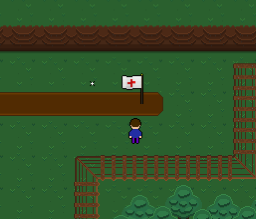
Battle Change (yes singular)
I have pretty much been working exclusively on the overworld for a while as you can see from all of the new additions, so the battle system hasn't gotten any changes. However, there is one addition I wanted to add earlier that I didn’t get a chance to for Update 8.When you hover over a future arrow marker (or the order slot in the order pane) you get information about the attack that arrow is referencing. This is nothing new. However, I did add one more line to this information, the attack effects. Now you can see how much damage a move will do or what effects and item will have from this menu. Very useful for when you forget what exactly a Cool Drink does or how much damage an attack deals.
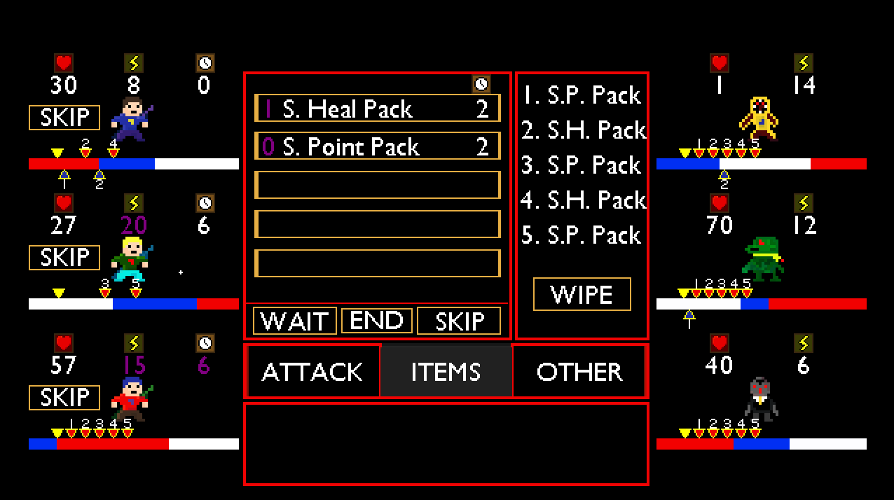
What’s Next
With this dev-log, I am about 45% done with Update 9. I pretty much split Update 9 into the overworld and battle sections, and I did the overworld first. The last two overworld additions (and most arguably the most important) are the Quest and Cutscene systems. I wasn’t sure how long those were going to take, so I figured I would get this dev-log out before I started those.Once I am finished with the overworld, I will move on to the battle system side of Update 9. This consists of a lot of polishing, final touches and more enemies. On paper, it shouldn’t be as much content as the overworld side, but that doesn’t mean it won’t take awhile.
In the Update 8 post, I said I was going to try and release the demo by the end of 2019, as you can see, that did not happen. I am currently writing this while the world is still in quarantine due to the Coronavirus. Not going to lie, this extra time has been extremely useful for working on Phases. I’m hoping I can finish Update 9 sooner rather than later using this time I have, let’s hope for the best.
As I briefly mentioned before, many of the things in this dev-log are planned on being final for the demo, which I still plan to release alongside Update 10. To not spoil anything, I have decided I will only be showing the Arlette portion of the demo. Arlette is the starting area (it’s about ⅓ of the demo) and I have planned quite a bit of stuff after you leave the town, but you will have to play the demo to find out what adventures await. Luckily, I feel like I have a really good foundation for building new areas and making a playable demo out of Phases so adding a bunch of content shouldn’t be difficult at all.
As always, I need to thank anyone who read this whole dev-log. It means so much to me that you care about Phases and I ask that you keep caring until you can finally play it. Thank you so much!
Lastly, if you want to stay up to date on the latest Project Phases happenings, go follow my Twitter. You can also subscribe on Youtube and follow on Twitch for videos and streams of Phases, but I definitely don’t do stuff there as often as Twitter. I have also been super active on Discord recently, primarily the Unique Indie RPGs server ran by MustardPlus. It is an awesome server filled with some really awesome projects and people. If you have a game of your own or even if you don’t, come on by, we would love to have you.
I wrote all of this in one sitting, I usually don’t do that so I’m going to go chill for a little bit. Go ahead and do the same.
Thanks for reading,
Andy